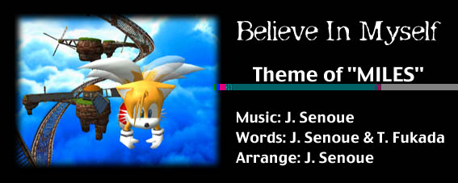

いつも一人でいる時に空想していること...
強くなりたい
信頼されたい
いつも一人でいる時に夢見ていること...
カッコよくなりたい
憧れの彼みたいに
でも、それてボクにとって簡単に出来ることじゃない...
だってボクの人生って、生き方って、他にあるもの
自分の人生を決めなきゃね!
もっと高く飛びたい、もっと高く飛びたいなぁ
きっと何もかも見えるところまで行けるんだ
誰かがボクを待ってる、ボクが空を飛んで来ることを
だからもっと高く飛んで行きたいんだ
とにかく進み続けなきゃ...
何もかもが、ボクにとって新しいチャレンジだけど
全ては自分の心の持ちようさ
自分の力を信じて頑張るよ
自分から一歩踏み出して行こう
いつも夢見ていたんだ...
彼の背中にさ、ボクのことを重ねて見ていたんだ
でもさ、誰かの後をついて歩いてたら...
ボクはいつまで経っても一人立ち出来ないよね
もう、誰かの真似じゃないボクだけの生き方を見付けなきゃ!
そのためには、どんな試練にも耐えてみせるよ!
もっと高く飛びたい、行けるところまで行ってみたいなぁ
きっと何もかも見えるところまで行けるんだ
誰かがボクを待ってる、きっと待ってる
そう信じて、もっと高く飛んで行きたいんだ
とにかく進み続けなきゃ...
何もかもが、ボクにとって新しいチャレンジだけど
全ては自分の気の持ちようさ
自分の力を信じて頑張るよ
自分から一歩踏み出して行こう
廻りを見渡せば、ほら、仲間がたくさんいるよ
みんなボクを助けてくれるし、ボクにも出来ることがある
ボクにしか出来ないことだってあるんだよ
みんな一人じゃないんだよ!
もっと高く飛びたい、ボクらしくね
きっと何もかも見えるところまで行けるんだ
誰かがボクを待ってる、ボクじゃなきゃダメなんだよ
そう信じて、もっと高く飛んで行きたいんだ
とにかく進み続けなきゃ...
何もかもが、ボクにとって新しいチャレンジだけど
誰にでも自分にしか出来ないことがあるんだよ
自分の力を信じて頑張るよ
自分から一歩踏み出して行こう